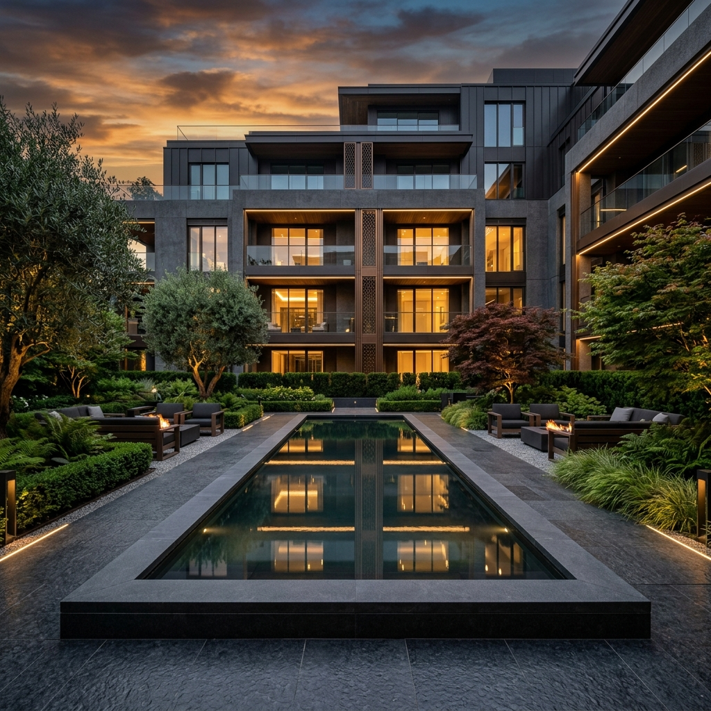
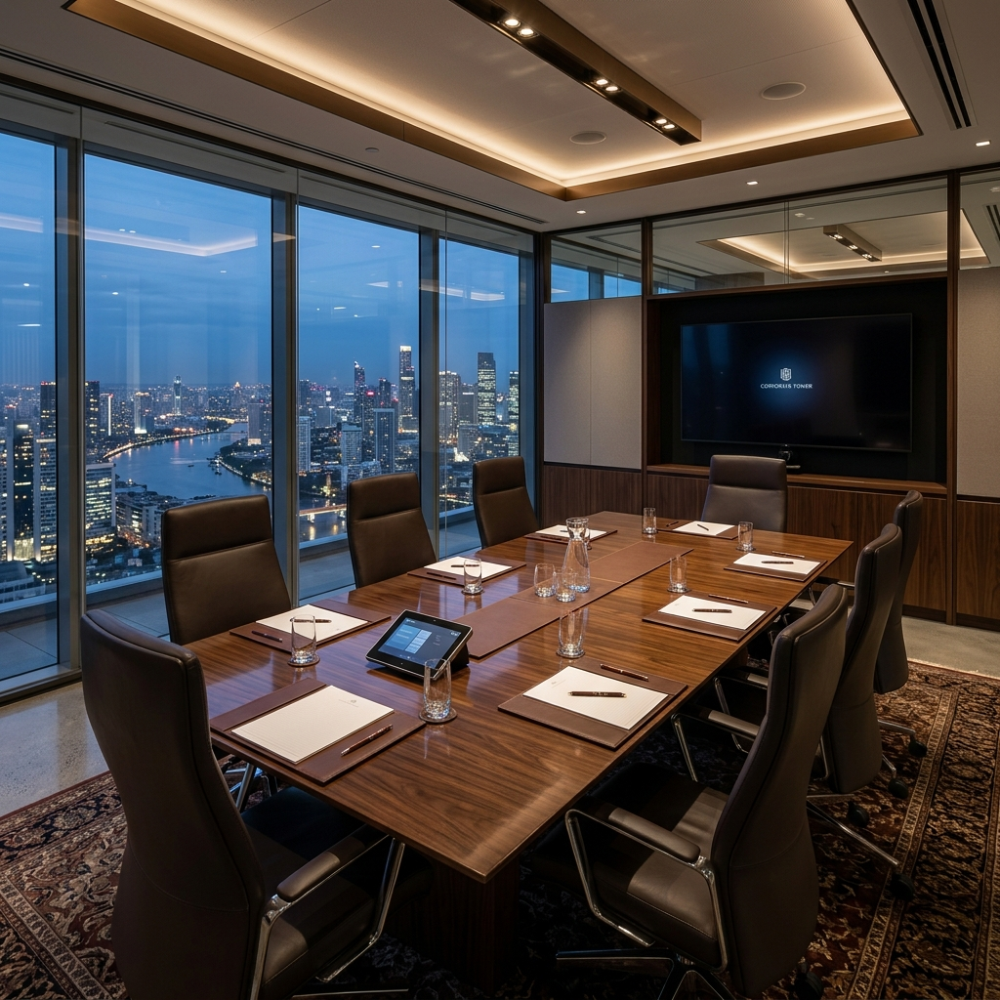
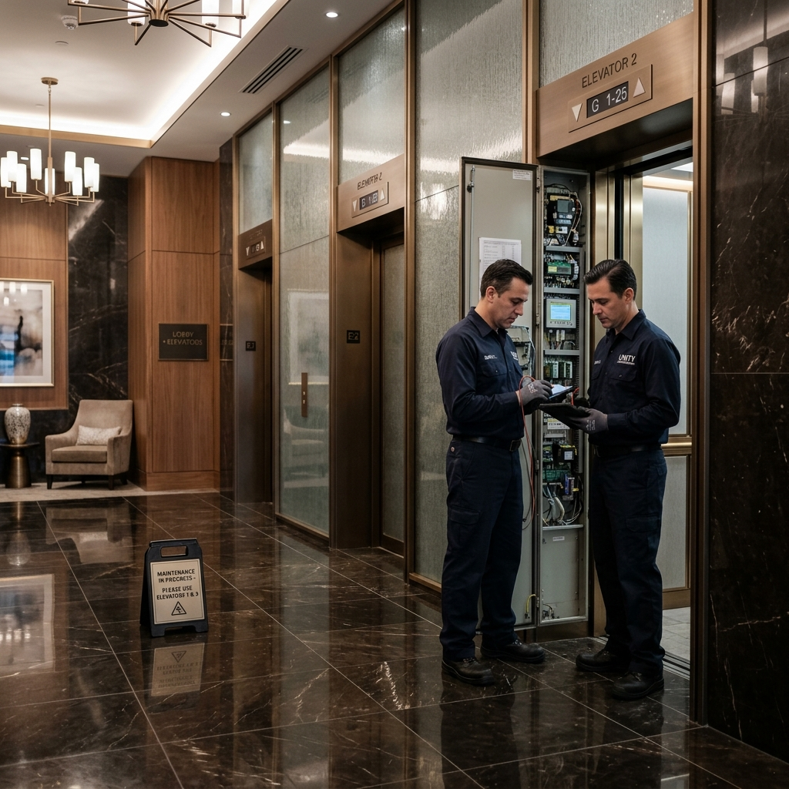
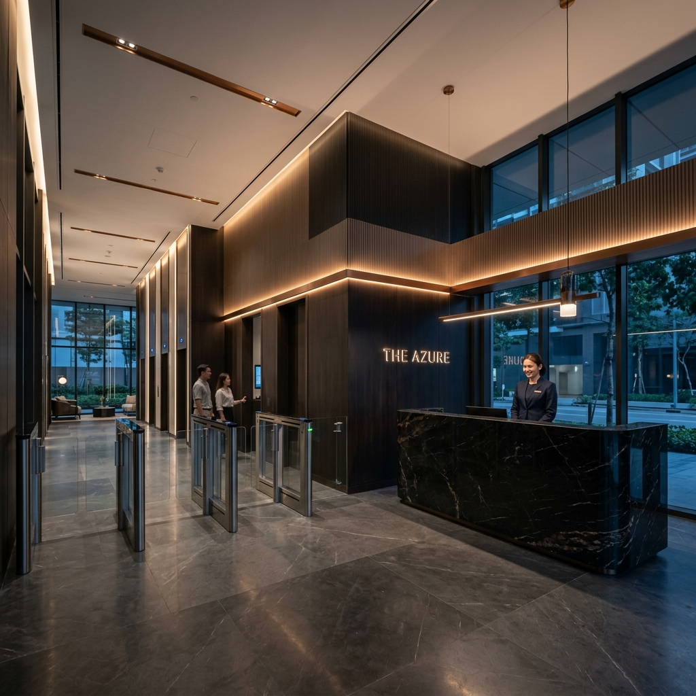

Custos sem controle
Orçamento aprovado em assembleia e executado sem acompanhamento, sem comparativo de fornecedores e sem histórico.
Síndico profissional · Facilities · Barra da Tijuca
Processos documentados, indicadores de desempenho e prestação de contas transparente na administração de condomínios residenciais e comerciais de alto padrão.
01 — Diagnóstico
A maioria dos condomínios só percebe o tamanho do problema quando já virou obra emergencial, processo ou conflito. O diagnóstico é o primeiro ato da governança.
Orçamento aprovado em assembleia e executado sem acompanhamento, sem comparativo de fornecedores e sem histórico.
Conserta-se depois da falha. O que seria plano preventivo vira obra emergencial, com preço e prazo de emergência.
Sem processo de atendimento e mediação, a convivência se resolve na reclamação e chega ao conselho já escalada.
Números apresentados uma vez por ano, sem indicador, sem série histórica e sem rastreabilidade de decisão.
O mesmo rigor de governança usado em grandes instituições, aplicado ao dia a dia do condomínio. Menos surpresa, mais previsibilidade.
02 — Escopo
09 frentes principais · 24 serviços no escopo completo
Representação legal e condução da operação diária com rotina documentada, agenda de assembleias e canal direto com o conselho.
Orçamento, fluxo de caixa e prestação de contas com série histórica.
Documentação, protocolos, atas e fluxos internos padronizados.
Rotina de limpeza, portaria, conservação e acompanhamento de equipes.
Plano preventivo por sistema, cronograma anual e registro de cada intervenção.
Vigências, reajustes e escopo cobrado conforme contratado.
Avaliação contínua, comparativo e substituição por desempenho.
Fiscalização de reformas, cronogramas, custos e controle de qualidade.
Ambiente, conforto, sustentabilidade e manutenção dos espaços comuns.
Escopo completo
03 — Operação
Cada frente tem responsável, rotina documentada e indicador. O que não é medido não entra no contrato.
Padrão de limpeza, jardinagem e manutenção de áreas comuns verificado por checklist, não por impressão.

Pauta, documentação e ata rastreáveis. O conselho decide informado.

Cronograma por sistema. Intervenções registradas, custos antecipados.

Procedimento escrito, comunicação padronizada e controle de prestadores.

04 — Trajetória
John Wayne traz para a gestão condominial a disciplina de grandes instituições financeiras.
Vídeo · trajetória do fundador
Carreira construída em grandes instituições financeiras. A disciplina de controle veio de lá.
Gestão condominial aproximada das práticas de governança corporativa.
Desde abril de 2023 administrando condomínios de grande porte na Barra da Tijuca, entre eles Concept, Latitud e Orygem.
Eficiência, transparência e valorização do patrimônio com prestação de contas clara.
05 — Podcast
Conversas que traduzem dilemas reais do condomínio em decisão clara.
Administrar vai além da rotina: controlar custos, planejar investimentos e liderar equipes.
John Wayne · Fundador, JW Gestão de Condomínios e Facilities
06 — Perguntas
As dúvidas mais diretas sobre atuação, contratação e operação, reunidas para apoiar a decisão do conselho e da assembleia.
Não encontrou a resposta que precisava?
Falar com a equipe07 — Localização
Av. das Américas, 4200 — Bl. 1, sala 305
Barra da Tijuca, Rio de Janeiro — RJ · 22640-907
Seg – Sex 9h às 18h
Sáb, Dom e feriados: fechado
08 — Proposta
Envie os dados do condomínio. Retornamos com um diagnóstico inicial e uma proposta de escopo preparada para apresentação ao conselho.
Condomínio, unidades e contato. Leva menos de um minuto.
Analisamos o cenário atual de gestão, manutenção e prestação de contas.
Escopo preparado para apresentação em assembleia, pronto para decisão.